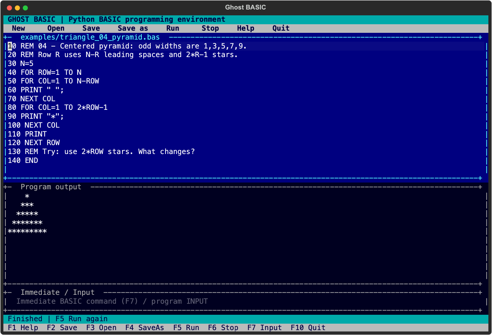
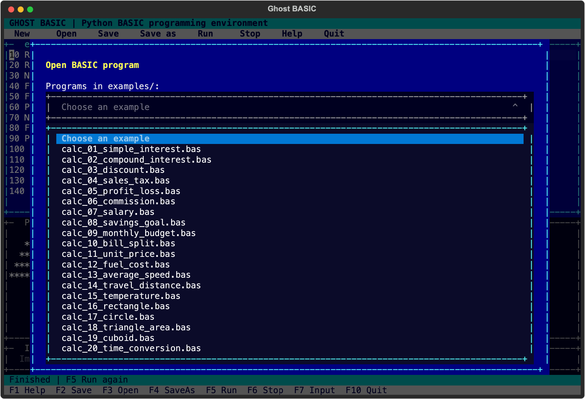
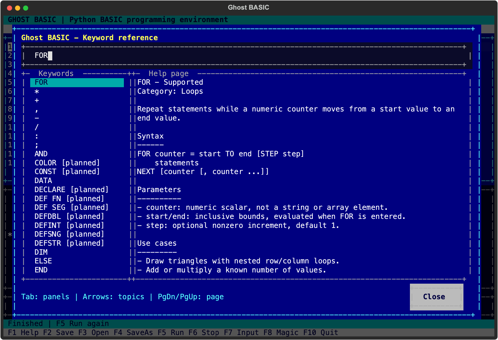
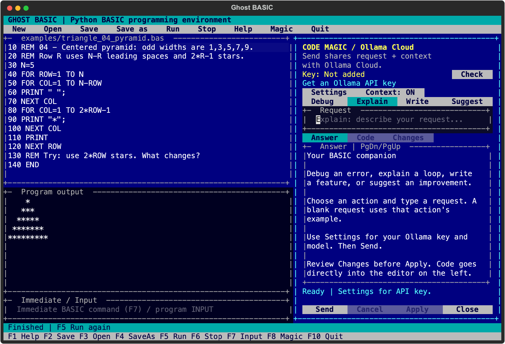
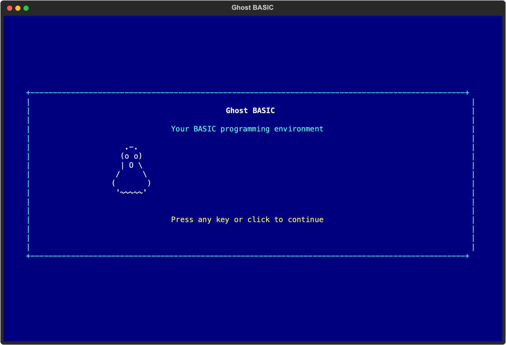

Make something that runs.
Numbered programs, immediate commands, loops, arrays, branching, and subroutines. Save your work and pick it up again.
An ASCII terminal. A blinking cursor. A place to turn curiosity into code. Explore loops, branching, and procedural thinking—one runnable program at a time.
MEET YOUR WORKSPACE
Edit, run, ask for help, and try again.
Everything stays right in your terminal.





Numbered programs, immediate commands, loops, arrays, branching, and subroutines. Save your work and pick it up again.
Find a keyword's purpose, parameters, use cases, and examples. Put the cursor on a keyword and press F1 for contextual help.
After installation, BASIC runs offline. Open UTF-8 and DOS CP437 text, with clear compatibility notes for older programs.
F8 / CODE MAGIC
Debug an error. Understand a loop. Describe a feature.
Your Ollama Cloud companion helps you take the next step.
Open F8 for Magic beside your code, and add your Ollama API key once in Settings. Magic remembers it securely and displays its check status. Magic uses your current program and last error when you include context, checks proposed BASIC syntax, and shows the changes for your review. Apply directly to the current editor when you are ready, undo with Ctrl+Z, and run with F5 to test.
BASIC and keyword help work offline. Magic is optional and sends your request and included code to Ollama Cloud.
LEARN BY CHANGING THINGS
Predict the output. Change one value.
Press F5. Follow your curiosity.
Start with a row, then think in loops. Try pyramids, hollow triangles, Floyd's triangle, and a diamond.
10 FOR ROW=1 TO 5
20 FOR COL=1 TO ROW
30 PRINT "*";
40 NEXT COL
50 PRINT
60 NEXT ROW* ** *** **** *****Explore pattern exercises
Ask for values, use a formula, and get an answer. There are 22 calculators to explore, including compound interest.
10 INPUT "Principal";P
20 INPUT "Rate percent";R
30 INPUT "Years";Y
40 I=P*R*Y/100
50 PRINT "Interest =";IInterest = 200Explore calculation exercises
Find out why a loop works. Every implemented keyword has a page, with planned features clearly marked.
HELP FOR
HELP INPUT
HELP MID$
REM Or put the cursor on a
REM keyword and press F1.Purpose. Syntax. Parameters.
Use cases. Examples. Limitations.
YOUR NEXT LINE STARTS HERE
Bring Python 3.12 or newer.
The source and dependencies take care of the rest.
The package installs GBASIC and ghost-basic. Activate the environment to use either command directly.
git clone https://github.com/tusharv/GBASIC.git
cd GBASIC
python3 -m venv .venv
source .venv/bin/activate
python -m pip install -e .
GBASICgit clone https://github.com/tusharv/GBASIC.git
cd GBASIC
py -3 -m venv .venv
.venv\Scripts\python.exe -m pip install -e .
.venv\Scripts\GBASIC.exeUses the environment directly; PowerShell activation is optional.
F3 Open an example. F5 Run it. F1 Find your next answer.
Ghost BASIC is an independent interpreter with a growing GW-BASIC-style subset. It is not yet a complete GW-BASIC or QBasic implementation. Execution currently requires numbered BASIC. Unnumbered QBasic files can be viewed and edited; procedures, graphics, and synthesized audio remain planned. Optional Code Magic connects to Ollama Cloud for explanations and reviewed code suggestions.
Read the compatibility report